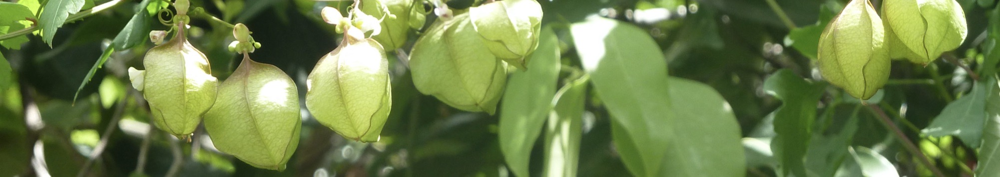

Species Interactions
What happens to the native community?
No organism exists in a vacuum. When one population adapts to a novel environment, these effects can cascade out of the novel environment to impact other populations and the species they interact with. We have observed how gene flow from soapberry bugs adapted to the introduced golden rain tree has caused maladaptation in populations of soapberry bugs still living on the native host plant. We now want to understand how this maladaptation has shifted the ecological and evolutionary pressures soapberry bugs exert in their native community.
We are now studying how selection on seed defenses of the native host plant, balloon vine, has shifted in response to changes in soapberry bug feeding morphology. We are particularly interested in understanding how this has impacted the success of other native herbivores on balloon vine (for example, the silver-banded hairstreak). We address these questions using observational and experimental data from the lab and field.

Balloon vine seedlings. We grow host plants at the greenhouse in the Biological Sciences Learning Center (BSLC).

Hand-made mesh bags. By excluding seed-feeding insects using mesh bags in the field, we can see how different native seed predators impact seed survival.
Explore more research topics ↓